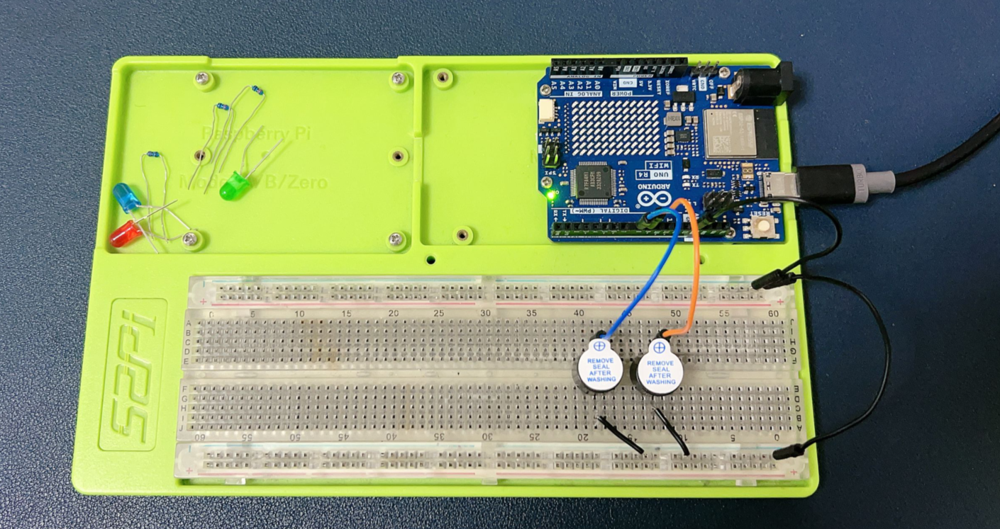
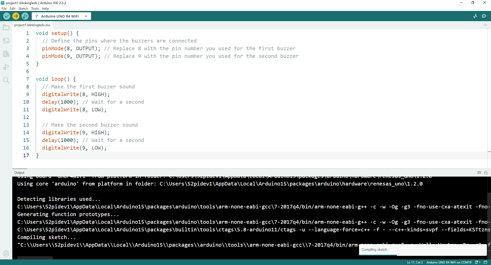

Project 2 Buzzer Buzzer Ring
Description
In Project 2, we are going to show you how does a buzzer working on Arduino UNO R4 wifi.
Setting Up a Buzzer Circuit with Arduino UNO R4 WiFi

Materials Needed:
- 2 x Buzzers
- 6 x Jumper wires (also known as DuPont wires)
- 1 x Arduino UNO R4 WiFi
- 1 x 52Pi Experiment Platform
- 1 x USB-C programming cable
Steps:
Prepare Your Workspace:
- Ensure your Arduino UNO R4 WiFi is powered off.
- Lay out your buzzers and jumper wires for easy access.
Identify Buzzer Pins:
- Each buzzer typically has two pins: one for the positive voltage and one for the ground.
- Mark or remember which pin is which for each buzzer.
Connect the Buzzers to the Arduino:
- Take a jumper wire and connect one pin of the first buzzer to a digital output pin on the Arduino (e.g., pin 8).
- Connect the other pin of the first buzzer to one of the GND (ground) pins on the Arduino.
- Repeat the process for the second buzzer, connecting it to another digital output pin (e.g., pin 9) and a GND pin.
Secure the Connections:
- Ensure all connections are secure to prevent loose connections.
Upload the Code:
- Write a simple program in the Arduino IDE to make the buzzers sound. Here’s an example code snippet:
- Upload the code to your Arduino UNO R4 WiFi.
void setup() {
// Define the pins where the buzzers are connected
pinMode(8, OUTPUT); // Replace 8 with the pin number you used for the first buzzer
pinMode(9, OUTPUT); // Replace 9 with the pin number you used for the second buzzer
}
void loop() {
// Make the first buzzer sound
digitalWrite(8, HIGH);
delay(1000); // Wait for a second
digitalWrite(8, LOW);
// Make the second buzzer sound
digitalWrite(9, HIGH);
delay(1000); // Wait for a second
digitalWrite(9, LOW);
}
Upload Sketch

Power On and Test:
- Power on your Arduino UNO R4 WiFi.
- Observe the buzzers sounding in sequence as programmed.
Notes:
- Ensure you connect the buzzers to the correct digital output pins on the Arduino to avoid damaging the components.
- Always double-check your connections before powering on the Arduino to prevent short circuits.
- You can modify the
delay()function in the code to change the duration of the buzzer sounds. - For a more complex sound pattern, you can add more buzzers or use the
tone()function to play tones at specific frequencies.
Demo Code Download
- Demo Code Sketch: Download